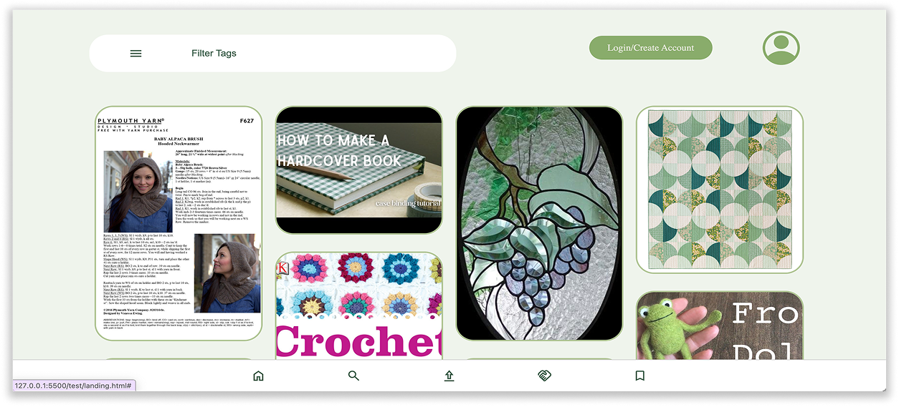
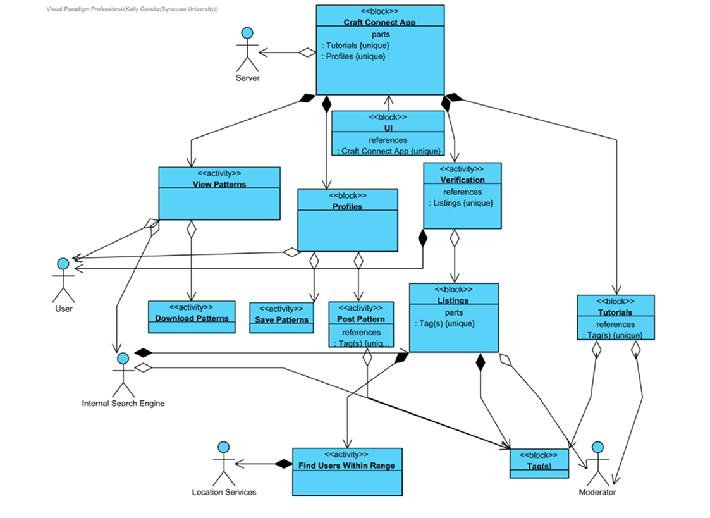
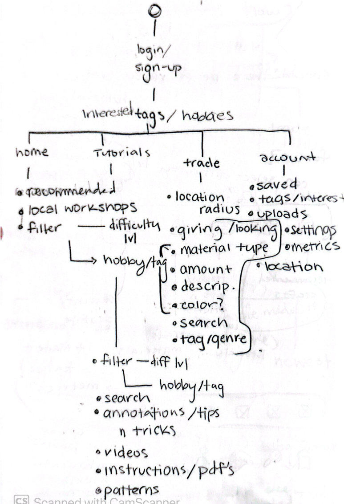
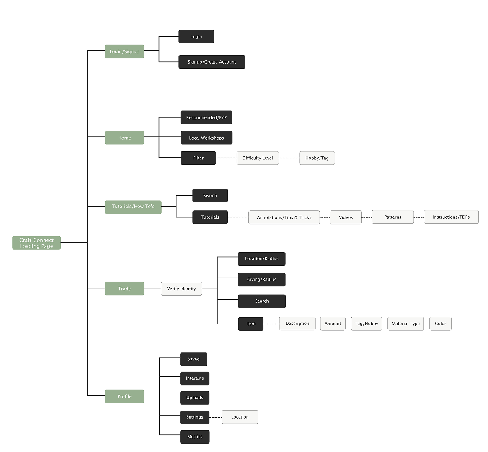
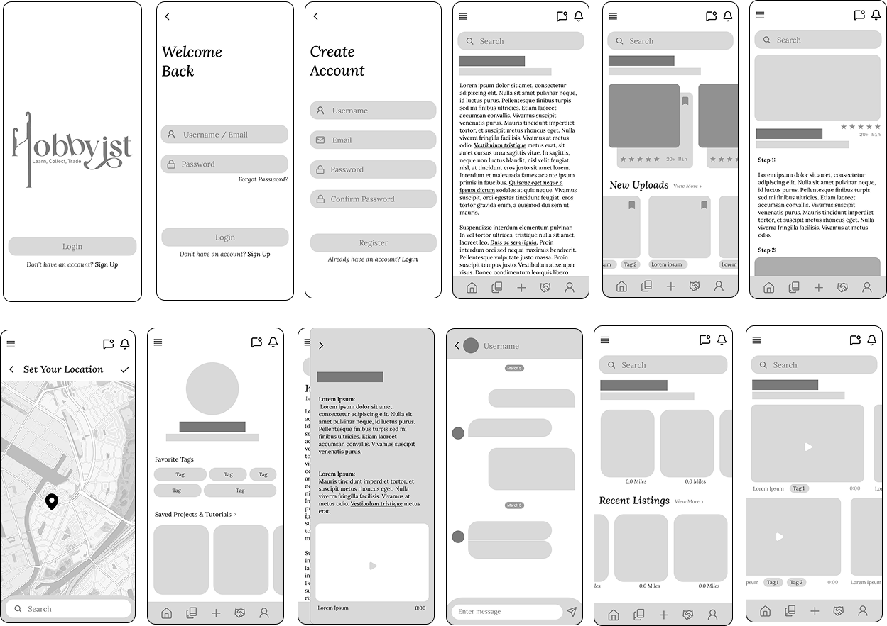
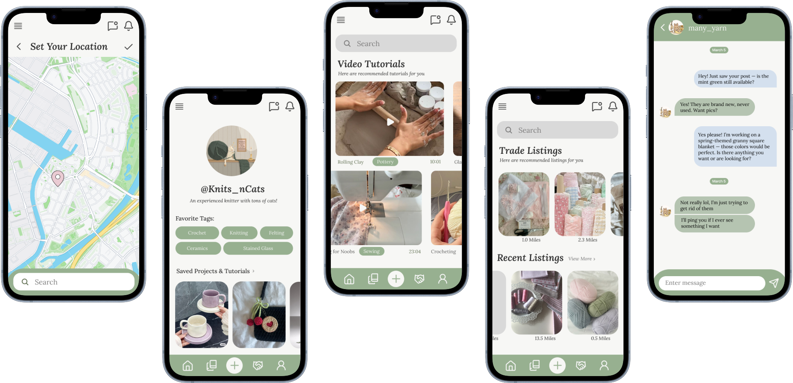
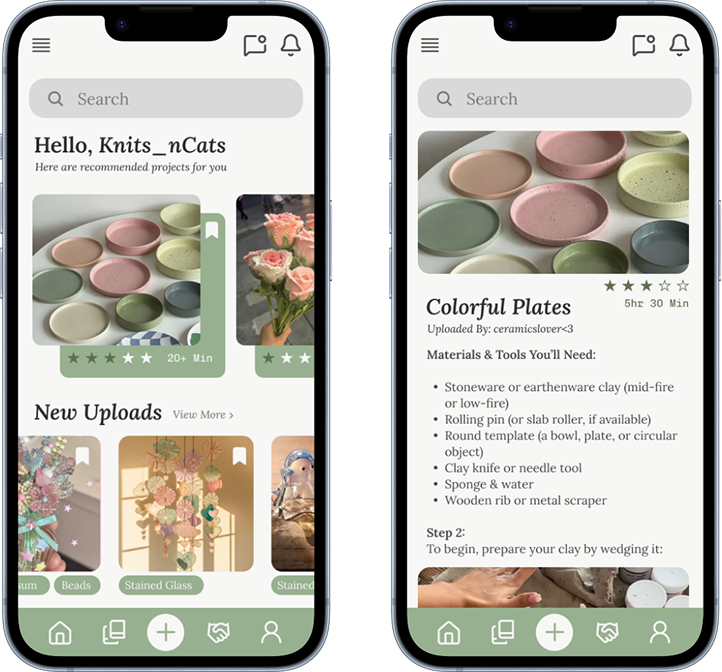
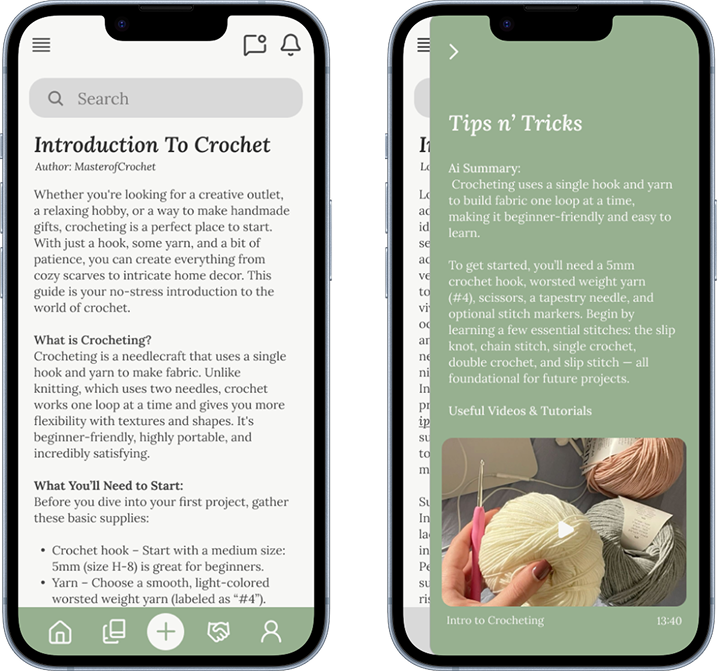
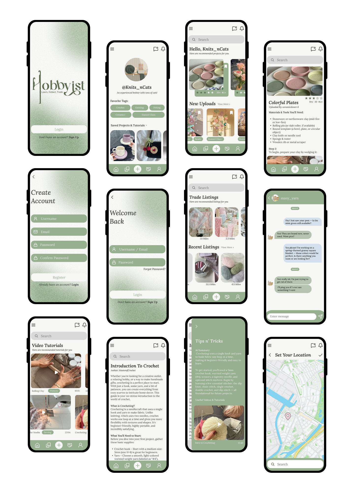

A community-driven platform for discovering crafts, exchanging materials, and connecting with local creatives.

Many people interested in creative hobbies face scattered resources, unclear entry points, and communities that feel unwelcoming. There was no single place to learn, share, and connect.
"How might we design an app that centralizes learning, material exchange, and community-building for crafters of all levels?"
From research and discussion, four consistent needs shaped every design decision that followed.
As part of the team phase, we built an early version of Craft Connect to validate technical feasibility. The goal was insight over polish — understanding how proposed features behaved under real constraints.
Building the prototype surfaced constraints invisible during planning — feature complexity competing for attention, unclear hierarchy, and accessibility that existed only in documentation rather than the actual UI. These insights directly motivated the solo redesign phase.

Original web application

System / class diagram
Revisiting the project independently, I identified several interaction-level issues the original web app failed to address:

Hand-sketched app flow

App flow diagram
Problem The original scope tried to do too much at once, creating cognitive overload for new users on first use.
Decision The redesign centres on exactly three flows — discovering projects, exchanging materials locally, and finding tutorials. Every screen maps to one of these.
Why it works Focused flows reduce decision fatigue and make the app immediately learnable, especially for beginners who need a clear path forward.
Problem Traditional engagement mechanics create competitive dynamics that discourage beginners from sharing their work.
Decision The home screen features saves and ratings — but no likes or counts that gamify participation.
Why it works Removing vanity metrics directly protects the low-pressure environment users needed. A values-driven decision, not just a simplification.
Problem First-time users encountered too many options simultaneously, leading to analysis paralysis.
Decision Wireframes and screens were designed with progressive disclosure — complexity revealed only when users are ready for it.
Why it works Beginners land on simple, clear screens. Power features are accessible but never imposing.
Problem The original app documented accessibility requirements but didn't consistently implement them in the actual design.
Decision Final Figma designs enforce high colour contrast, clear typographic hierarchy, simplified iconography, and comfortable spacing on every screen.
Why it works Accessibility has to be expressed visually to be real — making the app genuinely usable for all skill and ability levels.



The home screen displays algorithm-recommended projects, showing the user both the project's rating and the estimated time needed to complete it.
Users can also save projects to revisit later. The "like" feature was intentionally left out to avoid creating the kind of toxic, competitive environment often found on social media.
The Guide section features a variety of beginner-friendly instruction guides in text format. When a user highlights a hyperlinked keyword or important term, a pop-up page appears with a brief summary of the topic.
This page may also include user-submitted tips or input, along with a helpful video to provide visual support and make the instructions easier to follow.


Revisiting Craft Connect allowed me to practice stepping back from a broad concept and making focused, justified product decisions. The gap between the original implementation and the redesign was instructive — not because the first version failed, but because building it revealed exactly what needed to change.
"Start with systems thinking, then refine toward clarity, usability, and feasibility."
Designer, Developer · Academic → Personal Project